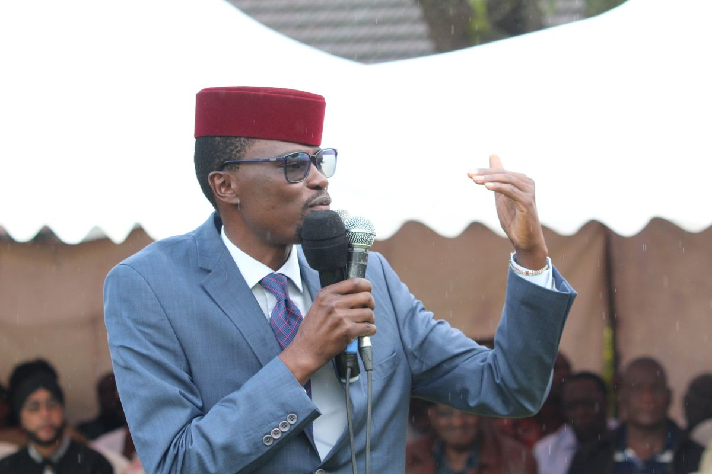

Humble Beginnings
Born and raised in Bungoma County, I understand firsthand the challenges and opportunities that define our community. My journey began in a modest family where the values of hard work, integrity, and education were not just taught but lived every day.
Growing up, I witnessed the struggles of our farmers, the aspirations of our youth, and the resilience of our people. These experiences shaped my worldview and instilled in me a deep commitment to serve and uplift my community.
"True leadership is not about personal gain, but about lifting others and creating opportunities for the next generation to thrive."

Early days in Bungoma County, where it all began